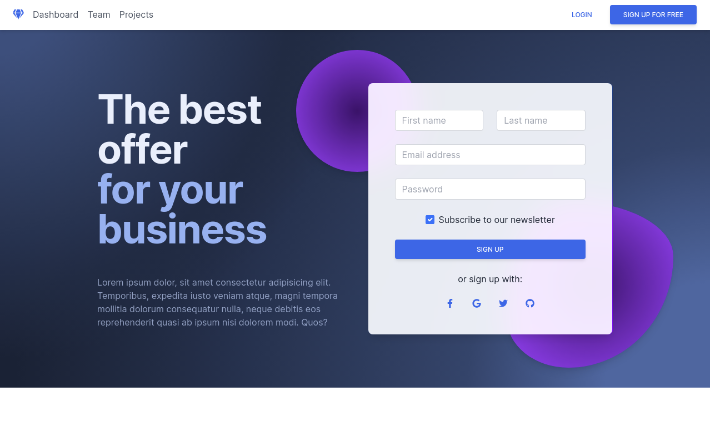

<!-- Section: Subpages -->

<section class="text-center">

  <div class="grid lg:grid-cols-2 gap-4 lg:gap-12">

    <!-- Column -->
    <div class="mb-12">
      <div
        class="relative overflow-hidden bg-no-repeat bg-cover ripple shadow-lg rounded-lg mb-6 flex items-center bg-white"
        data-mdb-ripple-color="true" data-mdb-ripple-color="light"
        style="height: 300px; background-position: 50%;"
      >
        
        <a href="/docs/standard/designblocks/hero-sections/">
          <div class="absolute top-0 right-0 bottom-0 left-0 w-full h-full overflow-hidden bg-fixed"></div>
        </a>
      </div>
      <h6 class="text-gray-800 font-semibold mb-0">Hero (intro) sections</h6>
    </div>
    <!-- Column -->

  </div>
  
</section>
<!-- Section: Subpages -->